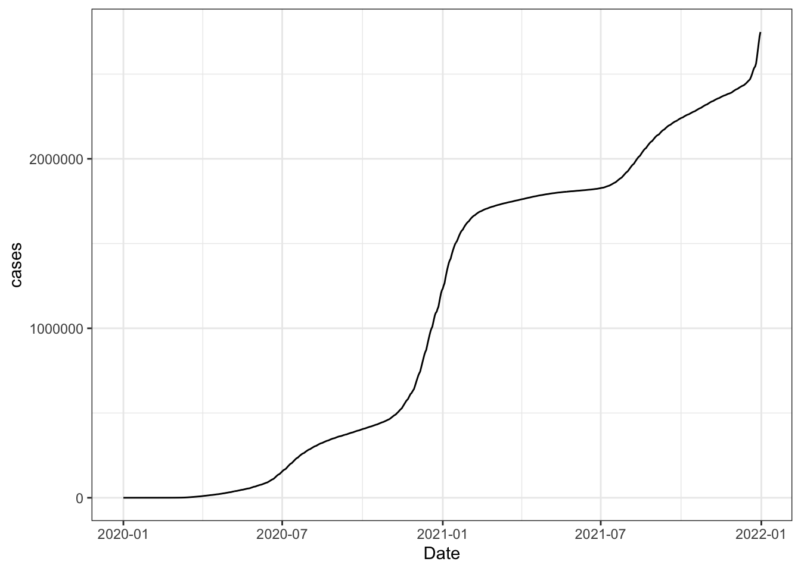
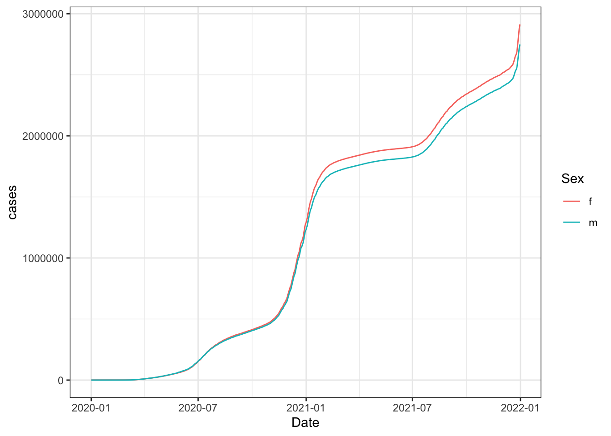

Warning: package 'httr2' was built under R version 4.5.2
library(dplyr)
Attaching package: 'dplyr'
The following objects are masked from 'package:stats':
filter, lag
The following objects are masked from 'package:base':
intersect, setdiff, setequal, union
library(ggplot2)
Why use an API:
you can schedule it to download data on a specific interval of time
you can persist thousands of requests per minute
you can pull real-time data to train a machine learning algorithm or respond to user input
We are using an API from the COVerAGE-DB database which includes confirmed COVID-19 cases, deaths, tests, and vaccines by sex and age.
We want to build a plot.
Launch the API
api_covid <-api_coveragedb()
[1] "Visit your REST API at http://localhost:48972"
[1] "Documentation is at http://localhost:48972/__docs__/"
## [1] "Visit your REST API at http://localhost:2234"## [1] "Documentation is at http://localhost:2234/__docs__/"
Usually, you won’t need to launch an API, but we are using a local API.
It has two endpoints - one for COVID cases for California, Utah, and New York and one for COVID vaccines.
The API also has two parameters - region and sex. Both are required.
The endpoint returns a JSON structured response and usual return codes (200 is successful and 500 is error).
An endpoint is composed of three things:
a base URL
the endpoint URL (in this case, /api/v1/covid_cases)
the parameters in the endpoing which are specified after a ? and each parameter is then concatenated with a &
Building an endpoint:
# COVID cases endpointapi_web <-paste0(api_covid$api_web, "/api/v1/covid_cases")# Filtering only for males in Californiacases_endpoint <-paste0(api_web, "?region=California&sex=m")cases_endpoint
<httr2_response>
GET http://localhost:48972/api/v1/covid_cases?region=California&sex=m
Status: 200 OK
Content-Type: application/json
Body: In memory (1086936 bytes)
## <httr2_response>## GET http://localhost:2234/api/v1/covid_cases?region=California&sex=m## Status: 200 OK## Content-Type: application/json## Body: In memory (1086936 bytes)
We can interpret this request was successful (code 200). Second, the response returned a JSON response. Finally, the body of the request has data, which is now loaded into RAM memory instead of just the harddrive.
All functions for working with the request start with req_. Search for functions that begin with this to find them all. All functions relating to the response begin with resp_. For example:
resp_status(resp_california_m)
[1] 200
## [1] 200
Hoe to extract the body containing data from the request:
`summarise()` has grouped output by 'Date'. You can override using the
`.groups` argument.
## `summarise()` has grouped output by 'Date'. You can override using the## `.groups` argument.resp_body_california_m %>%ggplot(aes(Date, cases)) +geom_line() +theme_bw()

Now see a trend for females compare to the overall trend:
# Perform the same request but for females and grab the JSON resultresp_body_california_f <- req %>%req_url_query(region ="California", sex ='f') %>%req_perform() %>%resp_body_json(simplifyVector =TRUE) %>%as_tibble()# Add the total number of cases per date for femalesresp_body_california_f <- resp_body_california_f %>%mutate(Date = lubridate::ymd(Date)) %>%group_by(Date, Sex) %>%summarize(cases =sum(Value))
`summarise()` has grouped output by 'Date'. You can override using the
`.groups` argument.
## `summarise()` has grouped output by 'Date'. You can override using the## `.groups` argument.# Combine the female cases with the male casesresp_body_california <-bind_rows(resp_body_california_f, resp_body_california_m)# Visualize both female and male casesresp_body_california %>%ggplot(aes(Date, cases, color = Sex, group = Sex)) +geom_line() +theme_bw()

Can you make a request specifying sex but an unavailable region (Florida, for example)